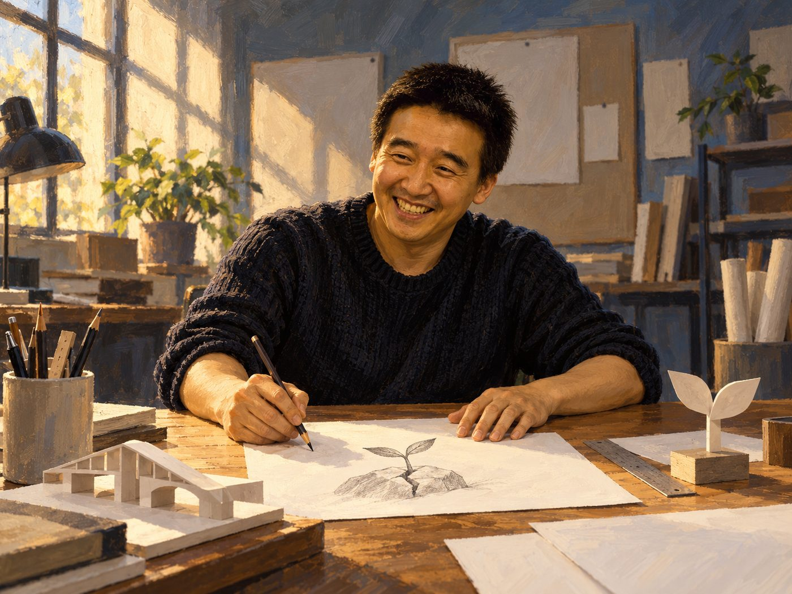

광고·마케팅 업계 뉴스 · 발행인 SM C&C 윤석진
동네 간판쟁이에서 세계를 놀래킨 공익광고 장이로

독자 여러분, 오늘은 '광고천재'라는 별명으로 더 유명한 광고장이 이제석을 소개합니다. 동네 간판 가게에서 붓을 들던 청년은 미국으로 건너가 광고를 공부했고, 뉴욕에서 만든 작품들로 세계 광고계를 놀라게 하며 이름을 알렸습니다. 공장 굴뚝을 총구처럼 보이게 만든 환경 포스터처럼, 그의 작업은 한 장면만 봐도 메시지가 꽂히는 단순함이 무기입니다. 귀국 뒤에는 이제석광고연구소를 꾸려 경찰 캠페인과 대구 세계육상선수권대회 홍보 등 공익광고와 사회 캠페인에 힘을 쏟았지요. 2010년 펴낸 『광고천재 이제석』은 '변방의 상상력'이라는 말과 함께 많은 청년 광고인을 자극했습니다. 큰 예산보다 날카로운 생각 하나가 사람들의 발길을 멈춰 세울 수 있다는 걸 몸으로 보여 준 사람입니다.